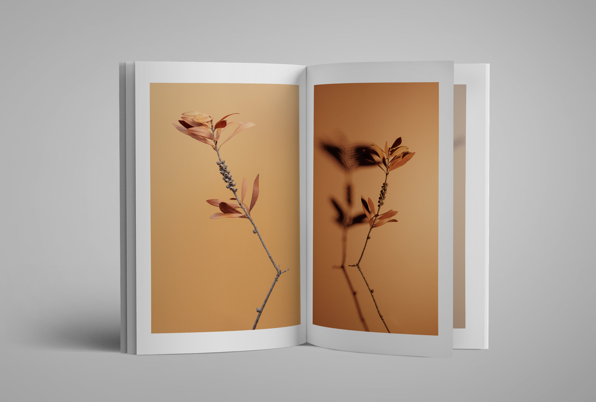
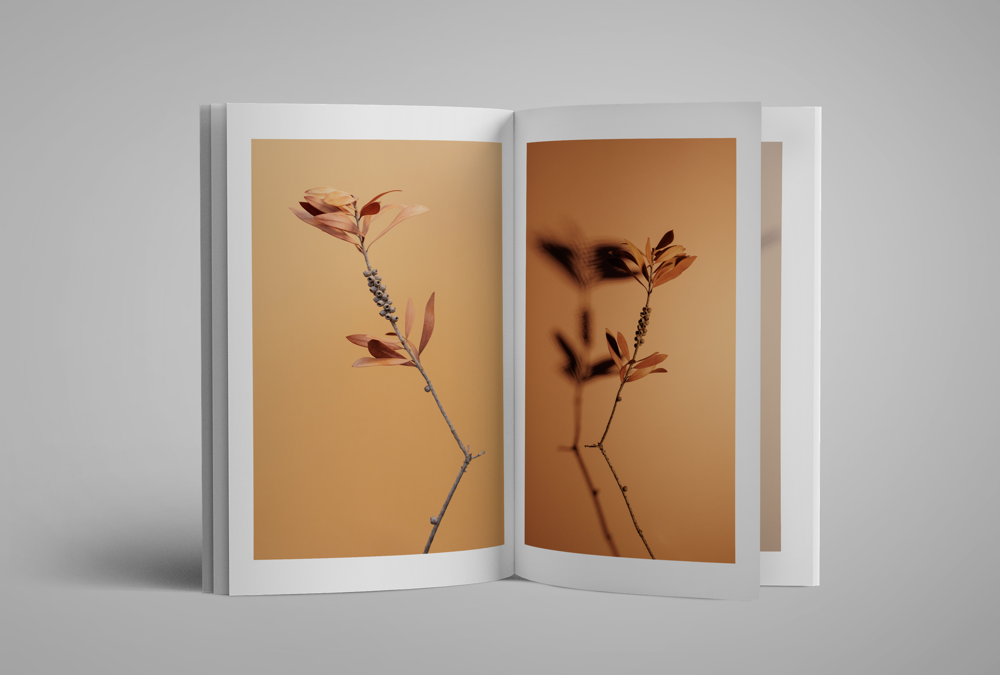

PASSATOPRESENTE
PHOTOGRAPHER
PASSATOPRESENTE
In questo progetto fotografico ho voluto rappresentare il tema PASSATOPRESENTE attraverso la natura che sta affrontando il suo ciclo di vita e morte. Nonostante ci troviamo davanti a foglie e rami secchi, con colori e consistenze che non sono più proprie di una natura viva, si riesce comunque a riconoscere in modo chiaro la pianta che ci troviamo davanti.
Il Presente è rappresentato dalla natura al momento dello scatto, morente, secca, senza più la sua vividezza che la contraddistingue, mentre il Passato Ë rappresentato dall’estetica e dalle forme rinsecchite, che seppur mutate, mantengono la loro riconoscibilità e acquisiscono un nuovo fascino.
Allo stesso modo, la natura che ho fotografato, ha lasciato spazio ad un nuovo corpo come Michelle Sank, nel progetto Wondrous, mostra come anche la vecchiaia possa essere considerata esteticamente bella, in aperta opposizione con quanto trasmesso della società contemporanea: viene fatta attenzione alla pelle, alle rughe e ai segni del tempo. Abbandonare l’immagine rassicurante del proprio corpo infantile, così bella e innocente, per appropriarsi di un corpo sconosciuto e spesso ritenuto brutto e sgradevole, è questione tutt’altro che semplice.
(Aliprandi M., Oltre l’Immagine, inconscio e fotografia, 2015: 46, 53)
 
